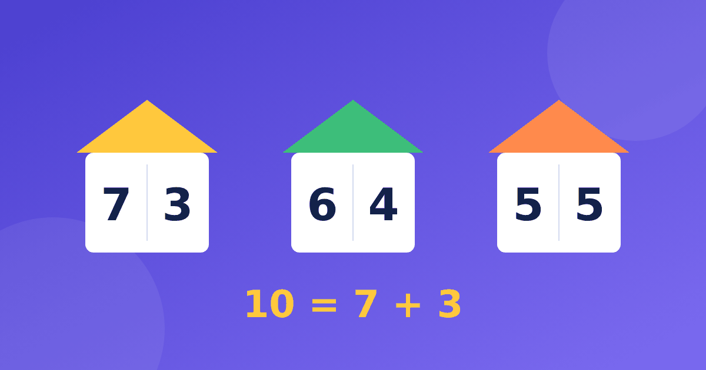

Из чего состоит каждое число первого десятка: домики вместо зубрёжки

Состав числа до 10 — основа почти всего, что ребёнок будет делать с числами дальше. Если он знает, что семь это три и четыре, то и прибавление, и вычитание, и переход через десяток даются заметно легче. При этом заучивание столбиков по карточкам нередко заканчивается усталостью. Покажем, как познакомиться с темой через образы и игру.
Что такое состав числа простыми словами
Состав числа — это все способы собрать число из двух меньших. Семь можно собрать как один и шесть, два и пять, три и четыре. Эти пары удобно записывать равенствами: 1 + 6 = 7, 2 + 5 = 7 и 3 + 4 = 7. Ребёнок видит, что число — это не точка на линейке, а набор, который можно разбирать и собирать.
Первоклассники обычно знакомятся с этим в начале года. Тема называется состав числа 1 класс, и ей уделяют много времени не случайно: от неё зависят все последующие приёмы. Поэтому спешить не нужно, а вот возвращаться к ней полезно часто и понемногу.
Числовые домики: картинка, которая запоминается
Один из самых наглядных способов — числовые домики. Нарисуйте дом с крышей, на которой написано число, а внутри сделайте этажи. На каждом этаже живёт пара соседей, которые вместе дают число на крыше. Дом восьмёрки получится таким.
- на первом этаже живут 1 и 7;
- на втором этаже живут 2 и 6;
- на третьем этаже живут 3 и 5;
- на четвёртом этаже живут две четвёрки.
Проверить себя легко: сумма каждой пары должна равняться восьми. Попросите ребёнка нарисовать домик девятки самостоятельно. У него должно получиться четыре этажа с парами 1 и 8, 2 и 7, 3 и 6, 4 и 5. Если какой-то этаж пропал, это повод сесть и найти недостающих жильцов вместе, а не ругать.
Игры без карточек
Состав числа хорошо запоминается в играх, где ребёнок что-то прячет, делит и угадывает. Вот несколько вариантов на каждый день.
- Кулак. Возьмите восемь конфет или фишек, покажите ребёнку пять, а остальные спрячьте в кулаке. Он говорит, сколько спрятано, и получает ответ три.
- Две тарелки. Разложите шесть яблок на две тарелки всеми способами и запишите, что получилось.
- Загадай пару. Вы называете число и одно слагаемое, а ребёнок находит второе.
Не огорчайтесь, если пары путаются: нормально, что одни числа запоминаются быстрее, другие дольше. Обычно первыми приходят пары с пятёркой и с десяткой, потом остальные. Попробуйте отмечать только те пары, которые ребёнок называет уверенно, и постепенно расширять список.
Каждая игра занимает пару минут. Важно, чтобы ребёнок сначала действовал руками, а потом переходил к записи. В следующей статье серии мы разбираем, как это переходит в дополнение до десяти и пары для счёта в уме.
Особое число десять
У десяти особая роль, и её состав стоит знать почти наизусть. Пары получаются такие: 1 и 9, 2 и 8, 3 и 7, 4 и 6, 5 и 5. Здесь удобно показать, что при росте одного числа второе уменьшается. Расположите пары столбиком, и ребёнок заметит закономерность без вашей подсказки.
Этот навык пригодится дальше, когда ребёнок столкнётся с примерами вида 8 + 5. Как раз состав десяти помогает разбить пять на два и три, а затем собрать десять и прибавить остаток. Подробнее о приёме читайте в статье как объяснить ребёнку сложение через десяток.
Типичные трудности и как с ними справляться
Чаще всего ребёнок путает пары для соседних чисел. Например, называет для семи пару 2 и 4, хотя вместе они дают шесть. Не спорьте словами, а предложите сложить двумя горками из семи кубиков и посмотреть, чего не хватает. Так ошибка находится сама, и стыда не возникает.
Ещё одна трудность связана с нулём. Некоторые дети удивляются, что число можно собрать из себя и нуля, например 5 = 5 + 0. Это нормальный вопрос, и его лучше разобрать на пустой тарелке: на одной пять яблок, на другой ни одного.
Как организовать занятия
Лучше заниматься понемногу, чем долго и редко. Хорошо подходят короткие подходы по несколько минут, а новое число можно добавлять тогда, когда предыдущее уже не вызывает затруднений. Не нужно добиваться идеальной скорости, достаточно уверенных ответов.
Для тренировки состава можно использовать тренажёр «Устный счёт». Модуль «Состав числа» в нём открыт бесплатно, а если ребёнок ошибается, кнопка «Объясни по-другому» предлагает три разных варианта объяснения. С чего вообще начинать в первом классе, рассказано в материале про устный счёт для первоклассников, а позже можно переходить к таблице, например по статье как выучить таблицу умножения.